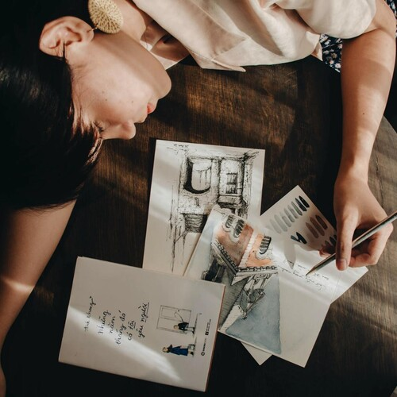

Art Books

Art Books
Creating works of art is not the only way to make money in Art,
creating an Art Book, is not that different from creating a work of art.
And one very interesting thing about art books is that,
the simpler the better.
The art book I have in mind is both, a number of tutorials,
and a selection of artworks, including behind the scene photos.
The tutorials would describe your own art style,
from your favorite brand of pencils, to tips and tricks that you have learned along the way.
Artworks with behind the scene photos,
would show a progression from sketch to finished work.
One interesting feature would be photos of your drawing desk,
with all the things that you use, all spread out with interesting little notes.
Some artists take it a step further,
and they use the photos for drawing reference, creating a drawing of their desk.
The equipment section of the Art Book
becomes a work of art it self.
Creating an Art Book is a wonderful learning experience,
and will offer plenty of opportunities to go from pencils to mixed media.
There are many tutorial and art books out there,
it may take a while to find a publisher.
But keep in mind, that well made educational books.
are worth their weight in gold.
I think a fine Art Book serves as an outstanding Art Portfolio as well,
one that would easily convince many galleries to display and sell your art.
Creating your own Art Book will capture your progression as an artist,
you can always update it with new works.
Plus, it carries the digitized versions of your works,
here the paper never gets old, it is a snapshot in time.
As you sell your artworks, or retire some of them,
they will remain forever young in your Art Book.
And finally, an Art Book is a magical object that will call you back to Art,
should life ever get too complex, or too busy.